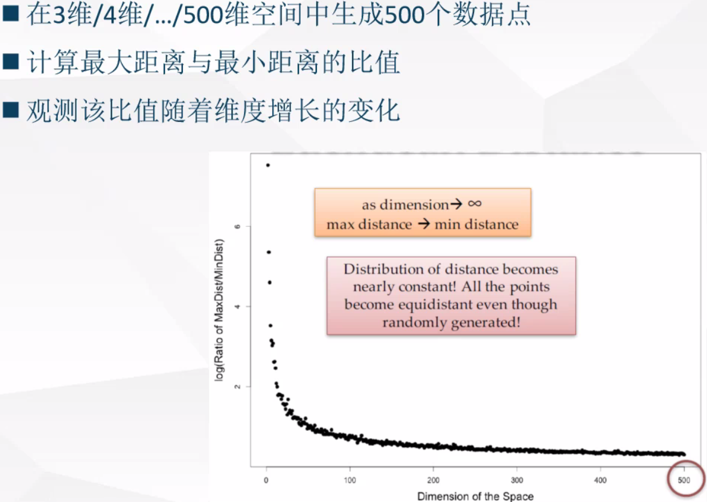
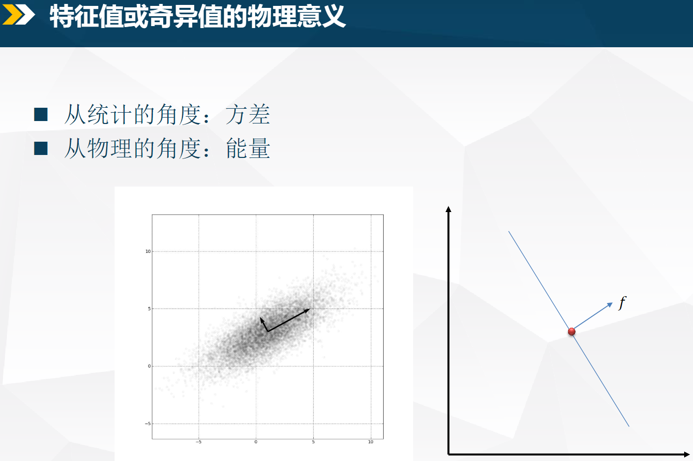
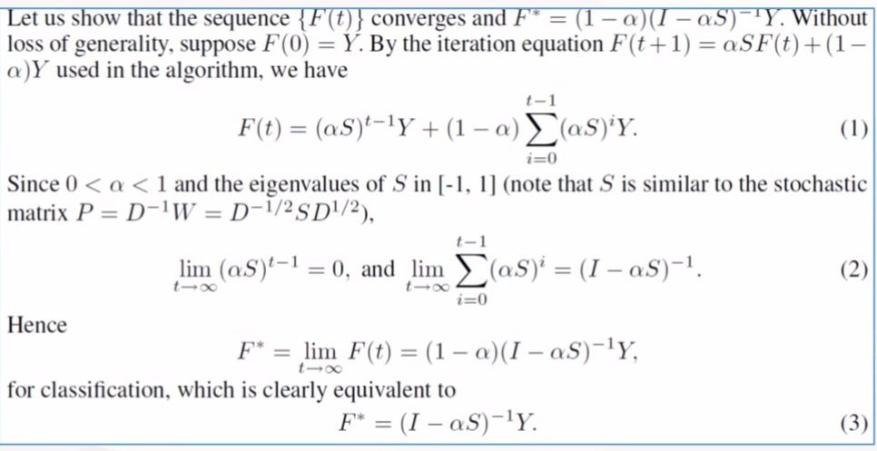
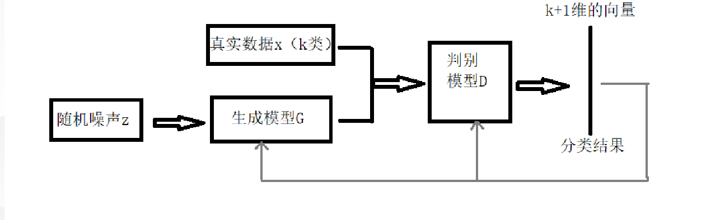

贝叶斯推断
- 贝叶斯 诊断推断
- 贝叶斯没有真正建模因果，建模的是相关
- 可解释性和稳定性
- 狗在草地上，结果分类狗建模成了草地
无监督学习-降维
维数灾难：随着空间维度的增长，数据点越来越分散，以至于距离和密度的概念越来越模糊，没有一种距离函数或相似性函数能避免高维带来的问题
算法用到距离时，就会受到影响
基本假设：维数可以被压缩，有些维数是无效的
方法：维度选择 维度抽取 即做映射
采样，Johnson-Lindestrauss (JL) embedding lemma
手工移除特征：冗余的，不相关的，质量差的特征
矩阵和矩阵乘法本质上是在做线性变换
矩阵分解是将一个矩阵分解为几个矩阵的乘法：高维矩阵的低秩近似
方阵-特征分解（对角化），非方阵-奇异值分解（SVD)
MDS算法：由距离矩阵构造一个低维空间
PCA降维 & kerner PCA
流形学习: 高维数据分布在低维流形
半监督学习
当前活跃领域
标注数据耗时耗力
同一个类别的样本内在服从一致的分布
无标注数据能够给出更有意义的分类边界“相似” 的数据点有”相似”的标签
“刚学完,在考试中可以(无答案)复习,因为题目也包含信息”
归纳学习和直推学习: 无标注测试数据用不用在训练
半监督平滑假设:
- 如果高密度空间中两个点 𝑥(1), 𝑥(2) 距离较近, 那么对应的输出𝑦(1), 𝑦(2)也应该接近
聚类假设
- 如果点在同一个簇，那么它们很有可能属于同一个类
聚类假设的等价公式:
- 低密度分隔:决策边界应该在低密度区域
流形假设:
- 高维数据大致会分布在一个低维的流形上
- 邻近的样本拥有相似的输出
- 邻近的程度常用“相似”程度来刻画
自学习: 把高置信的预测加入样本(
个人觉得从统计角度无意义,其结果有效性体现在其他方面)变体: 把所有(𝑥, 𝑓(𝑥)) 加到标注数据, 为每条数据按置信度赋予权重
启发式的缓解方案: 如果数据的置信分数低于某个阈值再把它的标签去掉
协同训练:
- 一个对象的两个视角,图像和HTML文本
- 训练两个分类器,交替把结果当作另外一个的标注
- 错误不容易被放大(
统计角度真的吗)
假设:
- 数据拥有两个充分且条件独立的视图（相容互补性）
自然的特征分裂可能不存在
多视角学习：
- 多个分类器，使他们在无标签数据上尽可能一致
- 正则化风险最小化框架
- 通过强迫多个分类器的预测一致性, 我们减少了搜索空间（真的吗），得到了一些理论结果的支持[Blum and Mitchell, 1998, 周志华 2013]
S3VMs
生成式模型和聚类标签法（一类取大多数标签）
假设越强，风险越高，但收益上限就越高
基于图的半监督学习
假设：假定在有标注和无标注数据上存在一个图. 被“紧密”连接的点趋向于有相同的标签—>流形假设
标签传播：临近节点有相似的标签
最小割：割成两边，一边一类，有多项式时间解法。
标签传播方式：调和函数法(电子网络解释，随机游走解释)–>
平稳分布？不能处理新的测试数据局部和全局一致性方法：引入标注数据（全局）和图能量（局部）之间的平衡

半监督聚类、
深度学习早期：无监督（无标签数据构建网络）+有监督（网络到标签）–预训练就是这样
半监督+GAN

概率图模型
- 概率图模型 = 概率 + 结构
- 条件独立问题:图分离
- 有向图条件独立:贝叶斯球算法(规则)
- 参数化的方式或者利用条件独立陈述来对联合概率分布进行描述是等价的！
- 仅从数据无法看出因果，要做干预
- 无向图条件独立：朴素图分割理论
- 是否可以把无向图转化为有向图？是否可以把有向图转化为无向图？好像都不可以
独立于算法的机器学习
- 终极算法
- 进化是也倾向简单的模式(耗费更低)
Ideas
因果+神经网络
对偶问题:转换数据量与数据维度,可不可以综合
自学习: 把高置信的预测加入样本(个人觉得从统计角度无意义,其结果有效性体现在其他方面)
从以前思考的无穷次硬币策略考虑, 很多策略只是把一小部分极限风险忽略了,机器学习背后的统计。。。
缩小图片,检测不同尺度的人脸